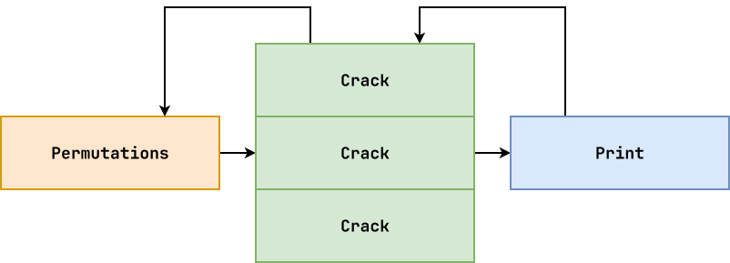
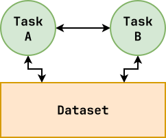
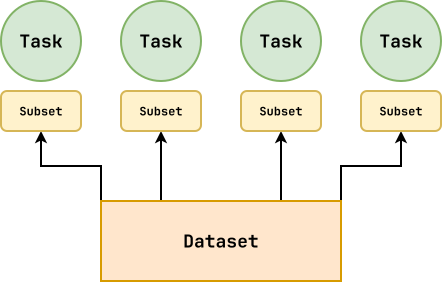

Review: Iterators, Generators¶
-
To implement the iterator protocol, an object must implement which methods?
__iter__()and__next__()To implement a generator, a function must use which keyword?
yield#!/usr/bin/env python3 from typing import Iterable, Iterator # Constants CHUNKS = [(1, 2, 3), (4, 5, 6), (7, 8, 9)] # Iterator class Flatten: def __init__(self, sequence: Iterable[Iterable[int]]): self.sequence = sequence def __iter__(self): # Create iterator for all subsequences, and get first one self.all_iterators = map(iter, self.sequence) self.current_iterator = next(self.all_iterators) return self def __next__(self): # Attempt to get element from current iterator # - Go to next iterator if current one is exhausted # - If all iterators are exhausted, then StopIteration will be raised element = None while element is None: try: element = next(self.current_iterator) except StopIteration: self.current_iterator = next(self.all_iterators) return element # Generator def flatten(sequence: Iterable[Iterable[int]]) -> Iterator[int]: ''' Version 0 ''' for subsequence in sequence: for element in subsequence: yield element ''' Version 1 ''' for subsequence in sequence: yield from subsequence # Main Execution for number in CHUNKS: print(number) print() for number in Flatten(CHUNKS): print(number) print() for number in flatten(CHUNKS): print(number) print()Generators: Trade-Offs¶
Using the following to benchmark
odds.pyfrom Reading 05:$ seq 10000000 | measure ./odds.py -n > /dev/nulldef odds_fp(stream=sys.stdin) -> Iterator[int]: return filter(lambda n: n % 2, map(int, stream)) def odds_lc(stream=sys.stdin) -> list[int]: return [int(n) for n in stream if int(n) % 2] def odds_gr(stream=sys.stdin) -> Iterator[int]: for line in stream: number = int(line) if number % 2: yield number def odds_ge(stream=sys.stdin) -> Iterator[int]: return (n for n in map(int, stream) if n % 2)Generators are typically fast and use low memory.
Concurrency: Overview¶
Concurrency¶
-
Composition of multiple tasks.
-
Requires structure.
Parallelism¶
-
Simultaneous execution of multiple tasks.
-
Requires hardware resources.
Concurrency provides a way to structure a solution to solve a problem that may (but not necessarily) be parallelizable.
Example: pipelines
Single-core still process pipeline (concurrency without parallelism).
Concurrency: Pitfalls¶
When we have multiple tasks executing concurrently, we can encounter some problems:
-
Race Condition: multiple tasks compete for the same resource in an unpredictable manner.
-
Deadlock: multiple tasks are stuck waiting for each other.

Demonstration: Athlete vs Band Member
-
Race Condition: In order to talk, they need to grab microphone.
-
Deadlock: In order to talk, they need to grab both microphone and water bottle.
Lesson from Covid: Isolate and Don't Share!
Concurrency: Embarrassingly Parallel¶
Some problems are so obviously parallel, that is they exhibit natural concurrency, that we label them as embarrassingly parallel:


-
Little or no dependencies between tasks.
-
Little or no communication between tasks.
Concurrency: hulk.py (Skit)¶
Sequential¶
We can perfrom each step one at a time.
We can also perform each step concurrently (task).
Parallel¶

We can further divide crack into indepdendent tasks (data).
With aditional resources, we can achieve parallelism!
Concurrency: Task Parallelism¶
Generators support problems that exhibit task parallelism:

Concurrent execution of the different tasks on same or different datasets.
In such situations, the different tasks usually must communicate and coordinate with each other.
The concurrent execution of such tasks are interleaved throughout the execution of the application.Concurrency: Data Parallelism¶
Functional programming maps well to problems that exhibit data parallelism:

Concurrent execution of the same task across the elements of a dataset.
In such situations, the dataset normally exhibits data independence, meaning each element can be processed independently of the other.
Example: bench.py¶
Measure the runtime and memory usage of different versions of
odds.pyfrom Reading 05 multiple times:-
Sequential
-
Parallel
-
Is this embarrassingly parallel?
-
Does this exhibit data parallelism?
-
Does this exhibit task parallelism?
#!/usr/bin/env python3 import concurrent.futures import functools import os import re # Constants ROUNDS = 5 VERSIONS = ( ('iterative' , '-i'), ('functional' , '-f'), ('comprehension', '-l'), ('generator' , '-g'), ) # Functions def benchmark_once(flag): command = f'seq 10000000 | measure ./odds.py {flag} 2>&1 > /dev/null' return map(float, re.findall(r'([0-9\.]+)', os.popen(command).read())) def benchmark(name, flag): seconds_total = [] memory_total = [] # Version 1: Sequential ''' for _ in range(ROUNDS): seconds, memory = benchmark_once(flag) seconds_total.append(seconds) memory_total.append(memory) ''' # Version 2: Parallel with concurrent.futures.ProcessPoolExecutor() as executor: for seconds, memory in executor.map(benchmark_once, [flag]*ROUNDS): seconds_total.append(seconds) memory_total.append(memory) seconds_average = sum(seconds_total) / ROUNDS memory_average = sum(memory_total) / ROUNDS print(f'{name:>15}: {seconds_average:8.2f}s {memory_average:8.2f}MB') # Main Execution def main(): ''' # Version 1: Sequential for name, flag in VERSIONS: benchmark(name, flag) ''' # Version 2: Parallel with concurrent.futures.ProcessPoolExecutor() as executor: names = [v[0] for v in VERSIONS] flags = [v[1] for v in VERSIONS] executor.map(benchmark, names, flags) if __name__ == '__main__': main()Concurrency: Speedup¶
We can compute the speedup of parallelism using the following formula:
Speedup = Timesequential / TimeparallelExample:
Speedup = 48.982 s / 4.411 s = 11.10xConcurrency: Amdahl's Law¶
The speedup of a program using multiple processes is limited by the time needed for the sequential portion of the problem.
-
If the program does not exhibit high amounts of concurrency, then not much is gained with parallelism.
-
In other words, speedup is limited in part by how much work we can divide up among different processes.